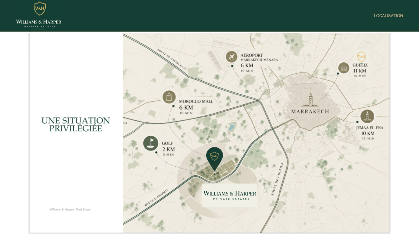

Salle de sport des résidents
Un espace dédié à l’entraînement et au bien-être, ouvert sur les jardins du domaine.
À Marrakech, le Domaine Red Stone réunit 41 villas privées sur un domaine de 8,9 hectares. Jardins, piscines et architecture contemporaine composent un cadre de vie ouvert sur l’extérieur.
Découvrir le projet
Un parc paysager de plus de 4 000 m² vient compléter les jardins privés des villas. Un espace commun pour se retrouver en famille, profiter du plein air et laisser une place généreuse à la nature au cœur du Domaine Red Stone.
Découvrir les espaces de loisirs →Les visuels présentés sur ce site sont fournis à titre indicatif et sont non contractuels.

Découvrez le Domaine Red Stone et ses plus de 4 000 m² d’espaces verts.
Agrandir le planLes visuels présentés sur ce site sont fournis à titre indicatif et sont non contractuels.

Les visuels présentés sur ce site sont fournis à titre indicatif et sont non contractuels.
Un lieu à soi, avec Marrakech à l’horizon. Retrouvez l’emplacement du Domaine Red Stone sur notre carte.

Domaine Red Stone · Route d’Amizmiz, km 7 · Sélectionnez la carte pour l’agrandir. · Les visuels présentés sur ce site sont fournis à titre indicatif et sont non contractuels.
Des espaces et des services prévus pour profiter du domaine, partager des moments en famille et prendre du temps pour soi.
Une maison de domaine de plain-pied réunit Red Coffee et sa grande terrasse, la conciergerie, le pressing, la supérette et la salle de sport. À l’arrière, un parking paysager accueille les résidents côté padel.


Propositions architecturales présentées à titre indicatif et non contractuelles. Sélectionnez une image pour l’agrandir. · Les visuels présentés sur ce site sont fournis à titre indicatif et sont non contractuels.


Les visuels présentés sur ce site sont fournis à titre indicatif et sont non contractuels.
Un espace dédié à l’entraînement et au bien-être, ouvert sur les jardins du domaine.

Deux terrains se suivent en longueur. Dans leur prolongement, sur le même axe, le grand parc pour enfants complète cet espace de loisirs.

Situé à la suite des deux terrains de padel, dans leur continuité, le grand parc paysager accueille toboggans, balançoires et structures de jeux pour les enfants.
Les visuels présentés sur ce site sont fournis à titre indicatif et sont non contractuels.

Un café au cœur du domaine, pour se retrouver, savourer une pause et prolonger les conversations.

Un service de proximité pour confier le soin de ses vêtements et alléger le quotidien.

Les essentiels du quotidien à quelques pas de chez soi, dans une boutique à taille humaine.
Les visuels présentés sur ce site sont fournis à titre indicatif et sont non contractuels.
Une gestion locative de A à Z, toute l’année, pour les propriétaires qui souhaitent louer leur villa et profiter de leur bien en toute sérénité.
Projection sur 292 nuits louées par an, soit 80 % d’occupation.
| Villa | Tarif / nuit | Recettes brutes estimées / an |
|---|---|---|
| Chloé | 700 € | 204 400 € |
| Céline | 900 € | 262 800 € |
| Margaux | 1 100 € | 321 200 € |
Recettes brutes avant frais de gestion, entretien, charges et fiscalité.
Profitez de votre propriété. Nous prenons soin du reste.
* Occupation et rendement observés sur nos deux villas exploitées à Marrakech. Ces résultats ne garantissent pas les performances futures du Domaine Red Stone. Tarifs variables selon la saison et la durée du séjour. Simulation indicative et non contractuelle.

Un point de contact au sein du domaine pour accueillir les résidents et les accompagner dans leurs demandes. Pour les propriétaires qui souhaitent louer, la conciergerie assure une gestion locative de A à Z, toute l’année.

Une présence de sécurité 24 heures sur 24 et un accueil à l’entrée du domaine, pour vivre sereinement.
Les visuels présentés sur ce site sont fournis à titre indicatif et sont non contractuels.
Espaces et services prévus au Domaine Red Stone. Visuels d’ambiance illustratifs et non contractuels.
Téléchargement direct, sans formulaire.